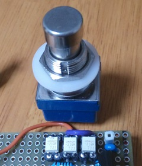
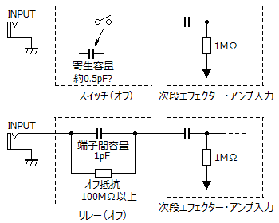
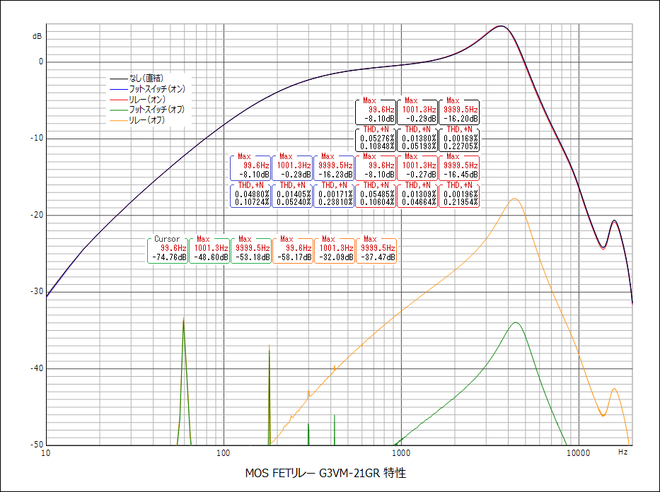
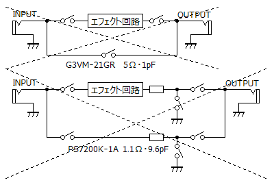

MOS FETリレー G3VM-21GR 特性測定
2018年06月03日 カテゴリー：実験等
SPSTモーメンタリースイッチでエフェクトのバイパスをする場合、リレーとマイコンを使うのが簡単だと思います。しかしながらメカニカルリレーは入手性や電力消費の点でイマイチかなと考え、MOS FETリレーを試すことにしました。
MOS FETリレーはソリッドステートリレーの一種で、各メーカーで同様の商品がありますが名称が違います（フォトリレー、Photo MOSリレー等）。参考ページ→オムロン リレー 技術解説
通常のものはオン抵抗RONや端子間容量COFFが大きいため、バイパスに使用する場合はバッファーが必要となってしまいます。そこで今回は低オン抵抗・低端子間容量タイプのG3VM-21GR（RON=5Ω、COFF=1pF）というMOS FETリレーを選びました。エフェクターでよく使われる青い3PDTフットスイッチと比較検討します。

G3VM-21GRは表面実装部品なので丸ピンソケットにはんだづけしました。フットスイッチは同じ大きさの黒いものも測定しましたが、青のフットスイッチと大差なかったので結果からは省いています。
ハイインピーダンス条件下での使用を考慮し、以下の接続としました。
[擬似ギター出力]→[リレーG3VM-21GR]または[フットスイッチ]→[バッファー（入力インピーダンス1MΩ）]→[PCマイク入力]
スイッチオン時に音質が変化しないのはもちろん重要ですが、スイッチオフ時も下図のようにハイパスフィルターを形成して高域が漏れることが考えられるので、そのあたりについても確認します。

※配線が近いだけでも容量が増加してしまうので注意が必要です。
▽結果

＜スイッチオン時の特性変化＞
周波数特性はほとんど重なっていますが、よく見るとリレーでは高域が下がっています。まぁごくわずかなので大丈夫でしょう。歪率についてはほぼ変化はありません。
＜スイッチオフ時の音漏れ＞
リレーではオンオフの差が-21dB（10kHz）となっており、ブースターやハイゲインエフェクターでは問題が出てくるかもしれません。エフェクターに組み込んだ後、どの程度影響があるか測定する予定です。フットスイッチでもわずかに漏れがあることがわかりましたが、実際のトゥルーバイパス配線ではオフ時にエフェクト回路の入力をアースに落とすので、問題になることはないと思います。
---以下2018年6月14日追記---

まず上図上側のバイパス方法を試しましたが、音漏れがあり発振しやすい上、切替時に少しポップノイズが出ました。その後下側の回路に変え音漏れや発振はなくなりましたが、ポップノイズは消えませんでした。スイッチングの順番をいろいろ変えてみましたがダメなようです。バッファーを入れて考え直すことにします。